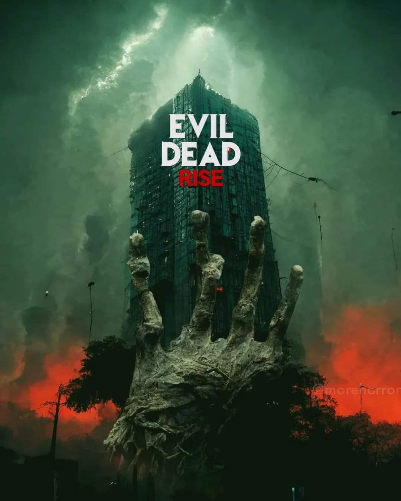
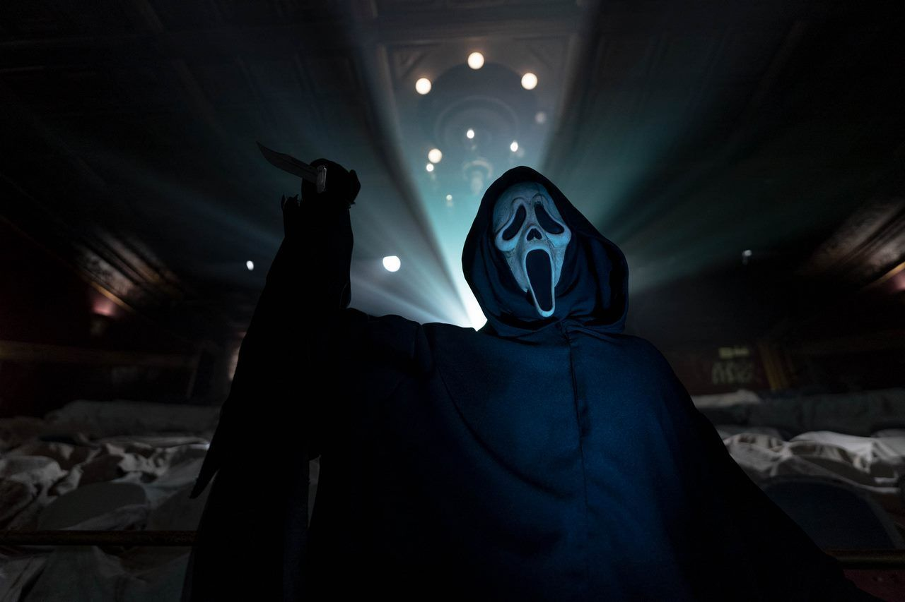
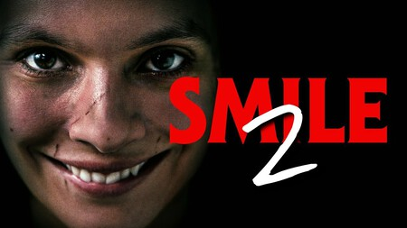

¿Qué hizo Evil Dead Rise en su producción?
La nueva película de la saga alcanza cotas inimaginables en cuanto a gente y, sobre todo, sangre.

El film llega con el aval de muy buenas críticas que fueron recogidas luego de su estreno en el festival SXSW (South by Southwest) donde se presentan contenidos del género de terror y gore.
Llegó a obtener un gran porcentaje de positividad en críticas en Rotten Tomatoes (alcanzó el 96%).
Gabrielle Echols, Morgan Davies, Nell Fisher, Alyssa Sutherland y Lily Sullivan son los protagonistas de esta quinta película que forma parte de una franquicia de terror creada por Sam Raimi allá por 1981.
La película está producida por Rob Tapert (Ash vs Evil Dead, Don’t Breathe)
y el productor ejecutivo es el creador de la serie Sam Raimi a quien se suman Bruce Campbell (actor que formó parte de la franquicia desde sus inicios cuando interpretó a Ash Williams), junto con John Keville, Macdara Kelleher, Richard Brener, Dave Neustadter, Romel Adam y Victoria Palmieri.
El director de la película es Lee Cronin (The Hole in the Ground) quien eligió trasladar la acción a una gran ciudad alejada de las entregas anteriores que tomaban parte en lugares alejados de la civilización.
"Scream 7" se retrasa por culpa de un monstruo clásico
El punto y final de la nueva trilogía protagonizada por Ghostface tendrá que esperar.

El gran éxito de SCREAM 6, que lleva recaudados más de 161 millones de dólares en todo el mundo, hacía pensar
que en breve se pondrían con la preproducción de Scream 7 y de este modo cerrar este reboot/secuela de la
saga en forma de trilogía que están llevando a cabo la gente de Radio Silence.
Sin embargo los realizadores de la también genial Noche de Bodas se tomarán un respiro de Ghostface
para rodar una nueva versión de una película de un monstruo clásico de Universal Pictures.
No se han dado detalles sobre el personaje en que estará centrada su película y
si será una cinta de corte clásico, o si por el contrario una revisión moderna como ocurrió con
El Hombre Invisible o la reciente Renfield.
Stephen Shields ha escrito el guión de la película con revisiones realizadas por Guy Busick.
Por su parte Chad Villella, William Sherak, Paul Neinstein y James Vanderbilt serán los productores de la película.
Nicolas Cage sobre su divertido personaje de Drácula en ‘Renfield’:
“Te estarás riendo y gritando al mismo tiempo”
El reconocido actor de Hollywood, Nicolas Cage, habla con la Voz de América sobre su papel de Drácula en “Renfield”.
Cage se sentó junto a Antoni Belchi de la Voz de América y hablaron sobre la diversidad y la inclusión en la industria del cine.
"
'SMILE', La terrorifica pelicula que hizo gritar de miedo a los fans el año pasado, prepara su secula con Paramount

Smile, una de las cintas de terror más populares del pasado año, tendrá una continuación para su historia.
Así lo han admitido durante la presentación de próximos contenidos de Paramount, en la CinemaCon de Las Vegas, que ha tenido lugar los pasados días en Estados Unidos.
Sobre la secuela todavía no se dispone de ninguna información. Tan solo se ha dado a conocer la luz verde del proyecto.
A medida que se vayan descubriendo nuevos datos sobre el mismo, iremos publicándolos para no perdernos ni una de las novedades de la escalofriante película.